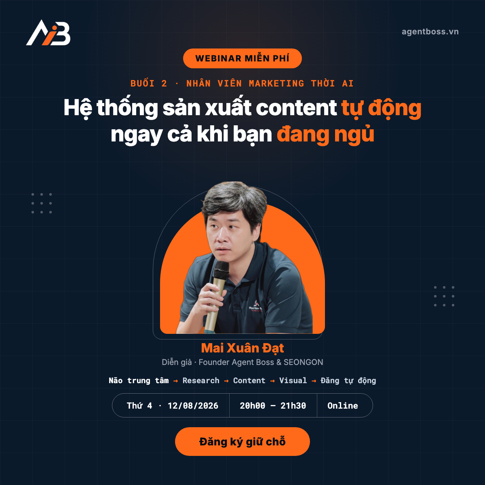

CN · 10/08
Bài 1 — Giới thiệu webinar buổi 2
Caption
Webinar: "Xây dựng hệ thống sản xuất content tự động ngay cả khi bạn đang ngủ" | 20h00 Thứ 4, ngày 12/08/2026
Có một kiểu mệt rất riêng của người làm content: không phải mệt vì một content khó, mà mệt vì bài nào cũng phải bắt đầu lại từ đầu. Tuần nào cũng mở lịch đăng ra, tuần nào cũng ngồi nghĩ chủ đề, viết brief, gửi designer, chờ, sửa, đăng. Xong tuần này lại tới tuần sau, y hệt.
Buổi đầu tiên của chuỗi cho thấy AI Agent có năng lực vô song khi bạn ra lệnh. Nhưng ra lệnh thì vẫn là bạn phải ngồi đó. Buổi 2 nói về bước tiếp theo, cũng là bước đổi hẳn cách làm việc: hệ thống tự chạy theo lịch, không cần bạn ngồi đó. Giống nồi cơm hẹn giờ: tối cắm, 6h sáng cơm đã chín, không ai phải thức canh.
Trong 90 phút, bạn sẽ xem tận mắt một hệ thống content hoàn chỉnh được dựng lên, gồm 5 khâu nối vào nhau như một dây chuyền:
🔥 Não trung tâm: nơi lưu toàn bộ hiểu biết về thương hiệu, sản phẩm, khách hàng và giọng văn của bạn. Bốn khâu còn lại đều lấy từ đây, nên content ra bao nhiêu bài cũng nhất quán
🔥 Research: Agent tự đi tìm tư liệu trước khi viết: thị trường, đối thủ, chủ đề đang được quan tâm
🔥 Sản xuất content: viết bài đúng giọng thương hiệu của bạn, không còn "mùi AI"
🔥 Sản xuất visual: tự làm ảnh và video đăng kèm, không phải chờ designer
🔥 Đăng bài tự động: đến giờ tự đăng lên kênh, bạn không cần ngồi canh để bấm nút
Năm khâu đó ghép lại thành một dây chuyền chạy theo lịch. Và cuối buổi là lộ trình để chính bạn tự dựng nó: bắt đầu từ đâu, cần gì.
Đứng phần chia sẻ và demo là anh Mai Xuân Đạt - người sáng lập Agent Boss, Founder SEONGON, một trong những chuyên gia đi đầu về nghiên cứu và ứng dụng Google Marketing tại Việt Nam.
Đây là buổi mà nhiều người sẽ nhìn thấy đích đến của nghề mình trong vài năm tới: phần việc lặp thì để hệ thống chạy, còn giờ làm việc của bạn dành cho chiến lược và sáng tạo, phần mà không máy nào làm thay được.
📌 THÔNG TIN SỰ KIỆN:
- Chủ đề: Xây dựng hệ thống sản xuất content tự động ngay cả khi bạn đang ngủ
- Thuộc chuỗi 4 webinar "Nhân Viên Marketing Thời AI: Làm Chủ Agent, X10 Hiệu Suất"
- Diễn giả: Mai Xuân Đạt — Người sáng lập Agent Boss
- Thời gian: 20h00 – 21h30, Thứ 4 ngày 12/08/2026
- Địa điểm: Online
- Chi phí: Miễn phí
🎁 Đăng ký giữ chỗ: [link đăng ký]
Visual
